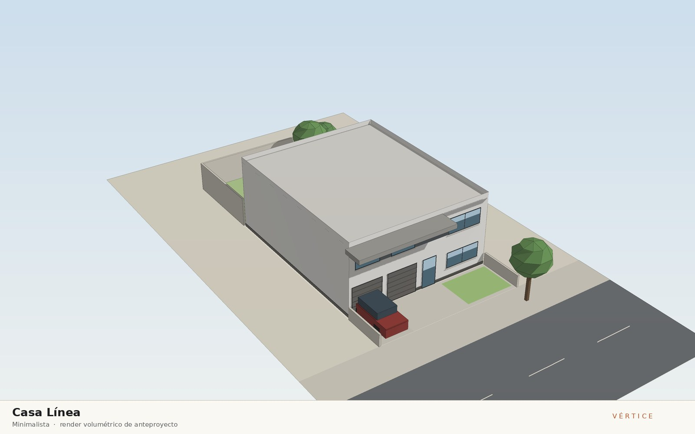
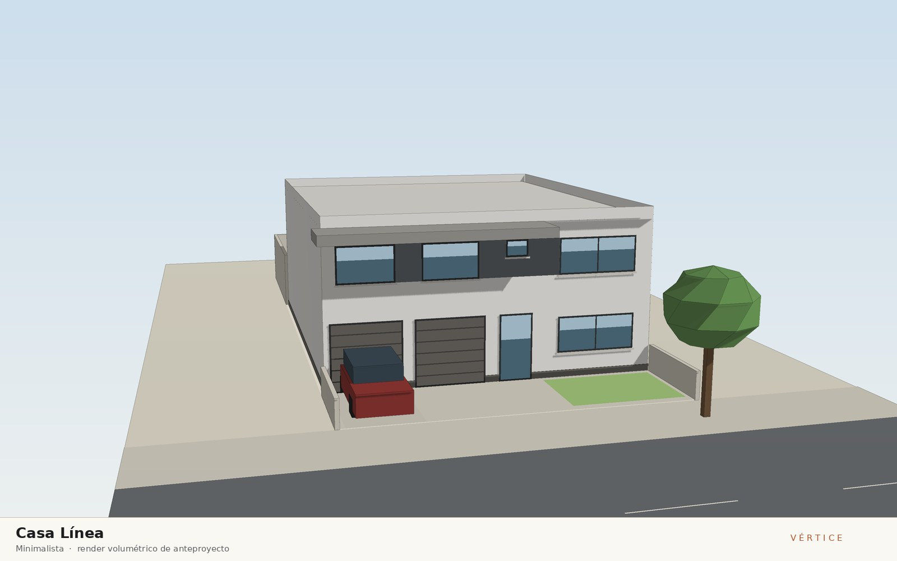
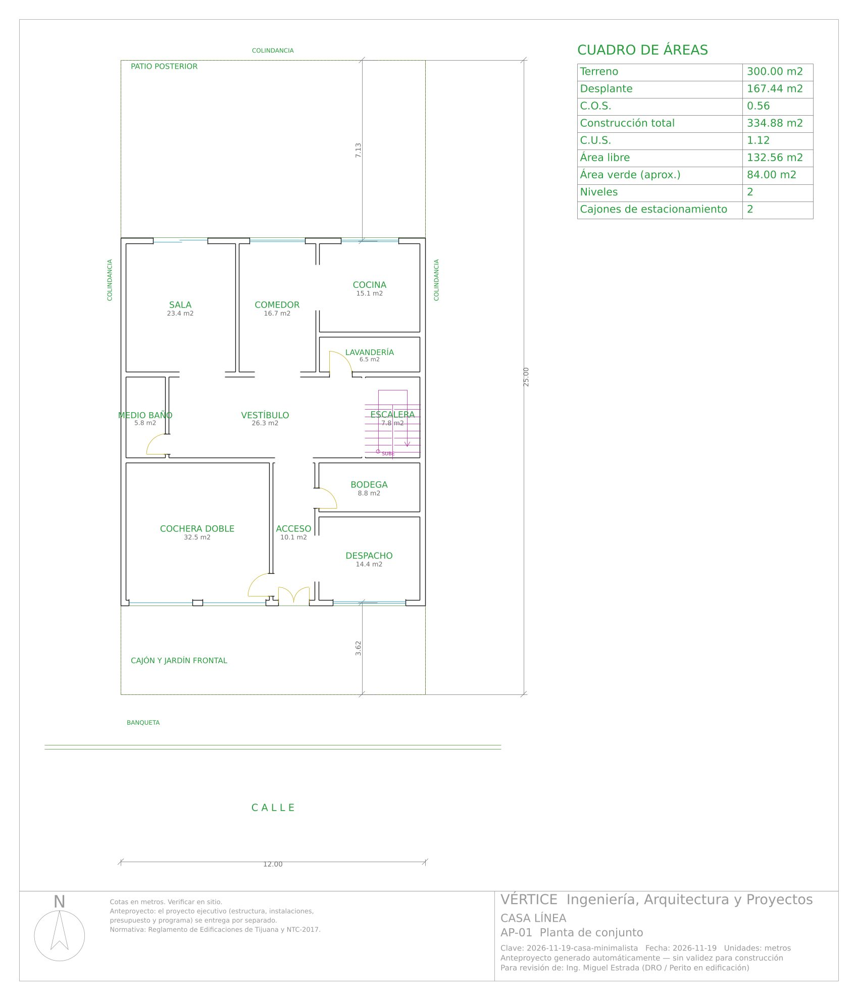
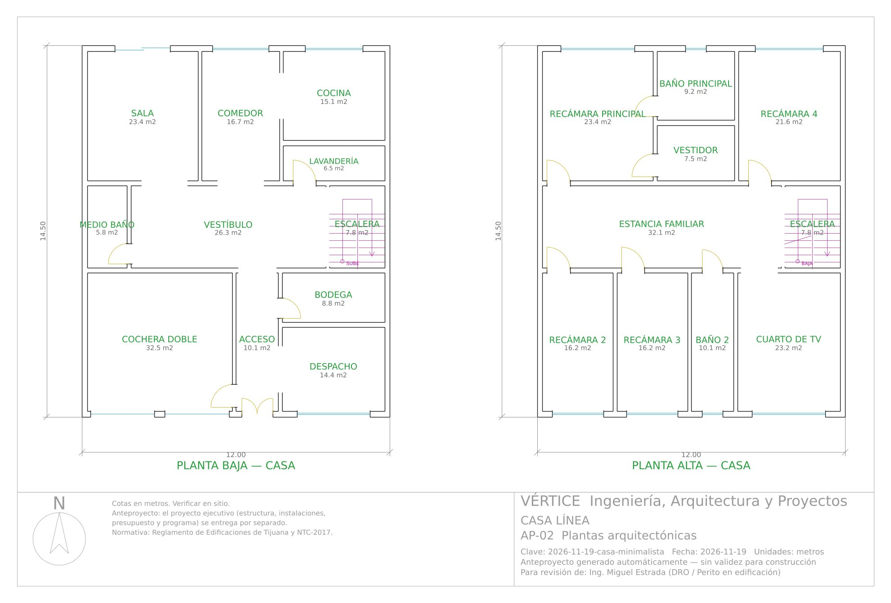
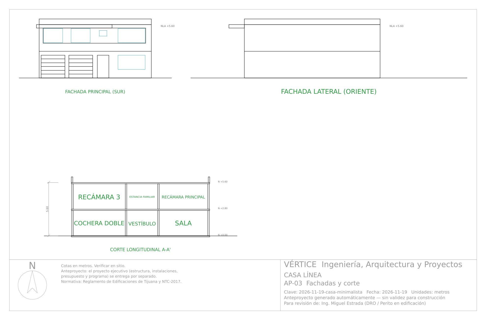

19 de noviembre de 2026 · Casa habitación
Casa Línea
Corriente: Minimalista

Concepto
Vivienda minimalista en un lote de 12 x 25 m en Tijuana, pensada como dos prismas blancos apilados y una sola línea horizontal que los ordena. En la fachada sur, la planta alta se abre con una ventana corrida de aluminio negro que une las recámaras, el baño y el cuarto de TV en una banda continua, y una losa en volado de concreto aparente gris corta el sol alto del mediodía sobre ella y marca el acceso. Las colindancias oriente y poniente quedan ciegas para cerrarse al asoleamiento del poniente y al vecino, de modo que toda la luz llega por las fachadas sur y norte: la sala, el comedor y la cocina se abren al patio posterior de 7 m y, junto con la ventana corrida, generan ventilación cruzada con la brisa marina. Pocos materiales, cantos limpios, sin molduras: el detalle está en la proporción y en la sombra del volado.
Dictamen del arquitecto
- Terreno de 12.00 x 25.00 m (300 m²); casa de 12.00 x 14.50 m a paños (11.75 x 14.25 m a ejes) en 2 niveles, 334.9 m² construidos con desplante de 167.4 m²: COS 0.56 y CUS 1.12 (por verificar con el PDU de Tijuana). Colindancias oriente y poniente ciegas (aplanado, sellador e impermeabilizante), restricción frontal de 3.62 m con 2 cajones y patio posterior de 7.13 m al norte.
- Lenguaje minimalista con dos rasgos que trabajan juntos: ventana corrida de aluminio negro en la planta alta sur (recámaras 2 y 3, baño 2 y cuarto de TV, con paneles ciegos entre vanos) y losa en volado de concreto aparente de 1.60 m de vuelo y 35 cm de peralte (12.7 m²) que sombrea las recámaras 2 y 3 y el baño 2 y marca el acceso. Se descartó la jardinera: el frente de planta baja (2 portones de 2.50 m, puerta doble de 1.20 m y ventana del despacho) no deja un paño libre ≥ 1.00 m; el motor ahora lo avisa en lugar de omitirla en silencio.
- Recorrido: acceso con puerta doble de 1.20 m (10.1 m²) que reparte a cochera doble (5.80 x 5.60 m), despacho (14.4 m²) y bodega (8.8 m²) → vestíbulo (26.3 m²) con medio baño (5.8 m², sin ventana: extractor obligatorio), lavandería (6.5 m²) y escalera en U → sala (23.4 m², cancel corredizo de 2.15 m al patio), comedor (16.7 m²) y cocina (15.1 m²) comunicados. Escalera de 1.15 m de ancho, peralte 17.5 cm, huella 29.0 cm (2p + h = 64 cm).
- Planta alta: estancia familiar (32.1 m²) que reparte a recámara principal (23.4 m², 4.46 x 5.25 m) con vestidor (7.5 m²) y baño (9.2 m²), recámara 4 (21.6 m²) al norte, recámaras 2 y 3 (16.2 m², 2.90 x 5.60 m) con clóset, baño 2 (10.1 m²) y cuarto de TV (23.2 m²) al sur. Todas las recámaras ≥ 2.70 m de lado con ventana al exterior; altura libre 2.67 m en ambos niveles (≥ 2.30 m).
- Cédula de acabados: porcelanato 60x120 marfil en locales secos (también huella y peralte de la escalera), porcelanato antiderrapante en baños, cerámico en lavandería y concreto escobillado en cochera; 293.6 m² de piso iguales en planos y presupuesto. Motor: (1) aviso de rasgo 'jardinera' omitido cuando la fachada no la admite; (2) el presupuesto cotizaba tanque de gas de 300 L en casas de azotea plana aunque la memoria pidiera 500 L (sólo se fijaba con cubierta inclinada); ahora usa la misma regla que instalaciones.
Dictamen de ingeniería
- Veredicto: construible conforme a norma — 0 errores y 0 avisos en las 29 verificaciones de coordinación, con los ajustes que hizo el ciclo arquitectura–estructura: vanos abiertos entre locales limitados a 1.80 m, muros de la dirección X en block de 20 cm (Y en 15 cm) y 2 muros de planta alta sin apoyo continuo especificados como divisorios ligeros de tablaroca; castillos fuera de vanos. Sujeto a los supuestos indicados abajo.
- Mampostería confinada (Q = 1.5): castillos K-1 15x20 (58 en planta baja y 54 en planta alta), dalas de desplante, cerramiento y remate, trabe de carga T-1 30x55 (L = 5.60 m, 5 #6, Mu 22.5 t·m) al centro de la cochera doble sobre columnas C-1 15x30, y 13 cerramientos T-2 a T-14 de 15x30 a 20x30. Método simplificado NTC: X VR 82.2 t ≥ Vu 78.0 t (margen 5 %, el más justo de la casa); Y VR 109.9 t ≥ 78.0 t. V basal 70.9 t con c = 0.213 supuesto y T = 0.18 s; muro más cargado X = 7.72 a 9,407 de 12,600 kg/m (75 %).
- Losas macizas de 13 cm en entrepiso (≥ 12.7 cm) y azotea (≥ 12.5 cm), #3 @ 10–20 cm; el volado de 1.60 m (peralte 35 cm) se ancla a la losa de azotea con gotero e impermeabilizado. Zapatas corridas h = 20 cm, B = 50 cm, #4 @ 33: ZC-1 perimetral (q = 5.91 t/m², excéntrica en los linderos oriente y poniente) y ZC-2 interior (q = 9.13 t/m², 76 % de la capacidad) contra una q adm supuesta de 12 t/m² a -0.80 m: requiere estudio de mecánica de suelos y confirmar el espectro sísmico del sitio. Cuantificación: 6,935 kg de acero (20.7 kg/m²) y 79.9 m³ de concreto.
- Instalaciones: 6 ocupantes, 0.9 m³/día, 22 UM (1.21 L/s), toma Ø13 mm, alimentación Ø25 mm, cisterna de 2 m³ con hidroneumático de 1/2 HP; 25 UD, bajadas del baño 2 (al acceso) y del baño principal (al comedor) junto a muro, a forrar en ducto, colector Ø100 mm PVC al 2 % a la red CESPT con ventilación Ø50 mm; gasto pluvial 5.0 L/s a 2 bajadas Ø100 mm, separadas del sanitario; 18 circuitos (15,978 W instalados, 11,185 W de demanda, 56.5 A), interruptor general 2P-100 A, desbalance 1.1 %; gas LP con tanque estacionario de 500 L en azotea, ventilado y a más de 3 m de flamas, troncal de cobre tipo L de 1/2" (1.68 m³/h). Factibilidades de CESPT y CFE por tramitar.
- Presupuesto de $1,897,887 + IVA ($2,049,718 con IVA fronterizo; $5,667/m²) y programa de 23 semanas (135 días hábiles); losa en volado (12.7 m²), cancelería de aluminio negro, portones, tanque de gas y acabados quedan entre las 38 partidas de la hoja "Por cotizar" hasta tener cotización de proveedores de Tijuana.
Materiales
Muros de block de concreto con aplanado fino blanco y pintura elastomérica mate; losa en volado de concreto aparente pulido gris claro; cancelería de aluminio negro mate con vidrio doble bajo emisivo; ventana corrida en planta alta con paneles ciegos de aluminio negro entre vanos; piso de porcelanato gran formato 60x120 tono marfil en interiores, porcelanato antiderrapante en baños y concreto escobillado en cochera; impermeabilizante blanco reflectivo en azotea
Vistas

Anteproyecto — descargas
Láminas del anteproyecto






Proyecto ejecutivo
Proyecto ejecutivo completo — 17 láminas. Se entrega por separado; no se publica en esta galería.
Revisión de coordinación arquitectura–estructura–instalaciones–acabados y normativa: Sin errores · 0 avisos en 29 verificaciones.
Arquitectónico
- A-01 Planta de conjunto
- A-02 Plantas arquitectónicas amuebladas
- A-03 Plantas acotadas a ejes
- A-04 Planta de azotea
- A-05 Fachadas
- A-06 Cortes arquitectónicos
- A-07 Cancelería y acabados
Estructural
- E-01 Planta de cimentación
- E-02 Losas, trabes y castillos
- E-03 Detalles estructurales
- E-04 Cuantificación de acero y concreto
Instalaciones
- IH-01 Instalación hidráulica
- IS-01 Instalación sanitaria y pluvial
- IE-01 Instalación eléctrica
- IG-01 Instalación de gas LP
- IH-02 Isométrico hidráulico
- IE-02 Cuadro de cargas y diagrama unifilar
Incluye: Memoria técnica (Word/PDF) · Presupuesto (Excel) · Programa de obra (Excel y Gantt) · Juego de planos (PDF y DXF)
Revisión de calidad
Sin errores · 1 avisos
| Tipo | Nivel | Observación |
|---|---|---|
| Aviso | Casa · Planta baja | Medio baño: ventilación mecánica (extractor) obligatoria. |
Cuadro de áreas
Ver los 21 espacios
| Bloque | Nivel | Espacio | Medidas (m) | Área (m²) |
|---|---|---|---|---|
| Casa | Planta baja | Cochera doble | 5.80 x 5.60 | 32.48 |
| Casa | Planta baja | Acceso | 1.80 x 5.60 | 10.08 |
| Casa | Planta baja | Despacho | 4.15 x 3.47 | 14.41 |
| Casa | Planta baja | Bodega | 4.15 x 2.13 | 8.83 |
| Casa | Planta baja | Medio baño | 1.70 x 3.40 | 5.78 |
| Casa | Planta baja | Vestíbulo | 7.75 x 3.40 | 26.35 |
| Casa | Planta baja | Escalera | 2.30 x 3.40 | 7.82 |
| Casa | Planta baja | Sala | 4.46 x 5.25 | 23.44 |
| Casa | Planta baja | Comedor | 3.17 x 5.25 | 16.66 |
| Casa | Planta baja | Lavandería | 4.11 x 1.57 | 6.48 |
| Casa | Planta baja | Cocina | 4.11 x 3.67 | 15.11 |
| Casa | Planta alta | Recámara 2 | 2.90 x 5.60 | 16.24 |
| Casa | Planta alta | Recámara 3 | 2.90 x 5.60 | 16.24 |
| Casa | Planta alta | Baño 2 | 1.80 x 5.60 | 10.08 |
| Casa | Planta alta | Cuarto de TV | 4.15 x 5.60 | 23.24 |
| Casa | Planta alta | Estancia familiar | 9.45 x 3.40 | 32.13 |
| Casa | Planta alta | Escalera | 2.30 x 3.40 | 7.82 |
| Casa | Planta alta | Recámara principal | 4.46 x 5.25 | 23.44 |
| Casa | Planta alta | Vestidor | 3.17 x 2.36 | 7.50 |
| Casa | Planta alta | Baño principal | 3.17 x 2.89 | 9.16 |
| Casa | Planta alta | Recámara 4 | 4.11 x 5.25 | 21.59 |
Anteproyecto conceptual generado por el motor Vértice. El predimensionamiento estructural y los cálculos de instalaciones son preliminares y no sustituyen la memoria de cálculo definitiva, el estudio de mecánica de suelos ni la revisión y firma del DRO y corresponsables.